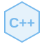
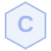

03 / TEKNOLOGI & LÆRING
Verktøy jeg bruker.
Kunnskap jeg bygger.
Dette er teknologier jeg møter i fag og egne prosjekter. Trykk på et kort for en kort forklaring og se hvordan jeg bruker det.

C++
Programmering
Et språk for å bygge blant annet applikasjoner og spill, med kontroll over hvordan programmet bruker minne og ressurser.
Jeg bruker C++ i bilutleiesystemet og Pong-spillet.
Se relatert prosjekt →

C
Innebygde systemer
Et språk som ofte brukes tett på maskinvaren, der kontroll over minne og ressurser er viktig.
Jeg utforsker C gjennom prosjektet med smartklokken.
Se relatert prosjekt →HTML Struktur på web
HTML beskriver innholdet på en nettside, som overskrifter, lenker, bilder og skjemaer.
Jeg bruker HTML til strukturen på denne porteføljen.
Se GitHub-profilen ↗CSS Design på web
CSS bestemmer hvordan innholdet ser ut og tilpasser seg ulike skjermstørrelser.
Jeg bruker CSS til layout, farger og animasjoner på nettsiden.
Se GitHub-profilen ↗JavaScript Interaktivitet
JavaScript lar nettsider reagere på handlinger, endre innhold og åpne interaktive visninger.
Her brukes det blant annet til videovisning og bakgrunnsanimasjon.
Se GitHub-profilen ↗SQL / SQLite Databaser
SQL brukes til å hente og endre data. SQLite er en database som lagres i en fil og kan bygges inn i en applikasjon.
Jeg bruker SQLite i bilutleiesystemet.
Se relatert prosjekt →Git / GitHub Versjonskontroll
Git holder orden på endringer i kode. GitHub gjør det mulig å samle kodearkiver og samarbeide på nettet.
Jeg bruker Git og GitHub til å ta vare på og dele prosjektene mine.
Se GitHub-profilen ↗Zephyr Sanntidsoperativsystem
Zephyr er et operativsystem for innebygde enheter. Det hjelper med oppgaver som må håndteres på en forutsigbar måte.
Jeg utforsker Zephyr i prosjektet med smartklokken.
Se relatert prosjekt →